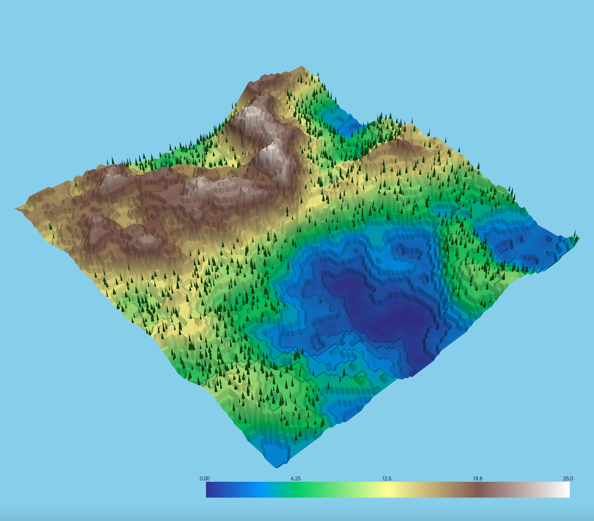

Procedural Terrain Generation with Style Transfer
Final Project Milestone
By Daniel Hodde, Gurvir Kooner, Richard Yang, Trustin Nguyen
Link to webpage:
https://hodde.dev/final_milestone
Link to Slides:
View Slideshow Presentation
Link to Video:
View Milestone Video
Summary
During the first two weeks, we created the foundational components of our terrain generation code by creating perlin and fractal perlin noise generators.
Using our noise generators, our scripts visualize the noise but also render the terrain via 3D height-maps in PyVista. We prioritized creating mountains
and valleys. Using the fractal noise generation, we were able to layer the noise generation to create realistic features when incorporating proper scaling.
To create more dynamic environments, we also developed a terrain + trees mode. Using the noise generation functions previously we create a normalized
tree-density map to add vegetation on top of our terrains. We place the trees based on a noise threshold but to enhance realism we apply a random offset
to the tree placement locations and use random generation to vary the tree heights.
Preliminary Results
Our first step was to get some kind of terrain generated with one layer of Perlin noise. The raw noise itself can be visualized, but in order to represent
it as terrain, we used the noise as a heightmap and passed it into PyVista. When creating our terrain we also colored it according to its height to make it more visually
appealing and closer to an actual world. We found the resulting terrain to be highly sensitive to the parameters the noise was calculated with, so we attempted to modularize
our code and make these parameters easier to experiment with. After experimentation this yielded a somewhat convincing result, however, it still left room for improvement.
Next, we improved our noise generation process by implementing fractal perlin noise, which adds layers of increasingly fine grained noise on top of each other to get more
subtle variations within the landscape, and thus more realism.
Finally for our initial stages we experimented with adding objects (namely trees) to our environment. We realized the same noise algorithms that we already implemented could
be used to distribute trees (or other things) across the same environment.
Reflection
We have slightly shuffled the order of tasks in relation to our original timeline, specifically that we put off neural style transfer to focus on creating a modular code
base that would be set up for experimentation, as well as ensure our base terrain generation was working well before expanding it. In terms of total work completed we
are on pace with our original goals, even with the scope that we have added.
Despite having an existing repo, we wanted to build our code from scratch to prioritize flexibility, so we can generate more interesting terrains. We explored other
procedural generation techniques like fractal generation. By building from the ground up this gave us room to explore creating different biomes.
Updated Plan
- Week 3: After exploring perlin noise and fractal noise generation we want to continue exploring different noise generation methods like simplex noise generation.
We want to outline the pros and cons of different generation methods. Differing methods can be computationally heavy, so it's important to find the right balance
between realism and what's computational feasible. We also want to add biome based generation to create more realistic words. For example, incorporating deserts,
plains, and savannahs. Currently, we are just generating mountains and valleys alongside bodies of water.
Currently, we incorporated vegetation placement with trees, however, we would like to extend to other features like buildings and rocks to create a more dynamic environment.
- Week 4: Finally, in accordance with our original plan alongside our visualizations and demos we want to incorporate neural style transfer.
With all elements we have implemented thus far we are able to generate noise, and a terrain from that noise as follows:
|
Perlin Noise
|

Simple Terrain with Trees
|